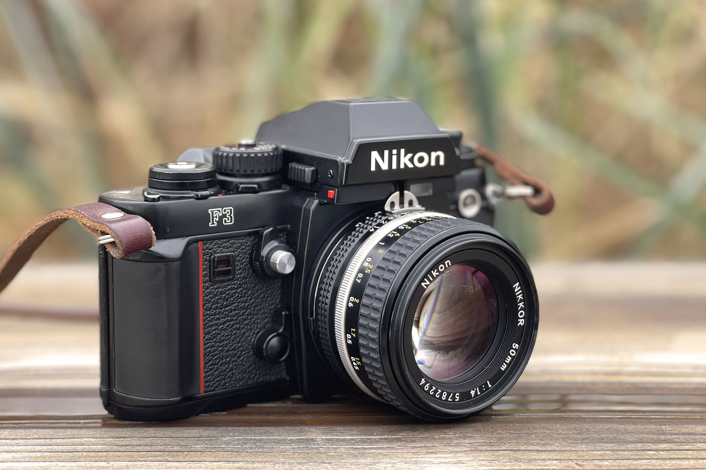

During my exchange year at PHS i join the Volleyball team and had the time of my life. I really enjoied playing in that group and to have practise ever single day. If I look back in my Year and think about, what I will miss the most. Volleyball is really high in that list.
In the middle of my Year here I bought this camera, and since than i really enjoy taking pictures with it. I decided to use a analog film camera instaed of a normal digital camera, because I like think about every picture and not taking a bush and just picking the best.